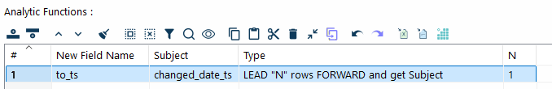
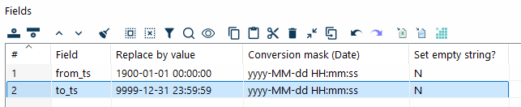
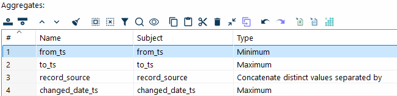
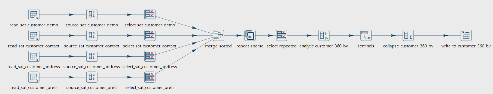

High-volume SCD2 loads
Dimension lookup/update implements Ralph Kimball’s slowly changing dimension, including a mix of type 1 and type 2 columns, and it can look up the version that was valid at a given time. It does that lookup in the target table for every input row. The cache on that transform removes some of the round trips. On a clustered database, or a remote one such as Snowflake, the lookups that remain still dominate the runtime.
This guide keeps the same functional result for a type 2 dimension: every change to a business topic (customers, products, and so on) is still visible. The pipeline does the work in one sorted pass and spends its time inserting rows. A run holds only the changes of the current business key in memory and handles hundreds of thousands of rows per second.
The pattern below runs on the Hop engine. Sorted schema merge, Repeat fields, Analytic Query, and Group By follow the row order of their input. Use a local or single-threaded run configuration. With several copies, partition by the business key so one key stays on one copy. See the engine notes on Group By and Repeat fields.
Read every source in the same order
Read one or more sources that share a business key and a change timestamp. Give those columns the same names on every stream. This guide uses business_key and changed_date_ts.
Ask the source database to sort. In Table Input that is an ORDER BY business_key, changed_date_ts. When the source is a file or another non-database input, sort it in the pipeline with Sort Rows.
On an incremental load, include the current target row only for a business key that appears in the delta, as one more source. A key with no new change is not read and not written. The current row carries the attributes already stored, so a later change can close its to_ts. Read that row with the stored from_ts as changed_date_ts, and set record_source to a value no delta source uses, for example target. The rebuilt from_ts is that same timestamp, so an update on business_key and from_ts still finds the stored row. See the tip on the Repeat fields page.
|
Sort every source with the same collation. A database |
Tag the source and align the timestamp
On each stream, add a constant that identifies where the row came from. This guide calls that field record_source. Use Add constants.
With Select values, keep business_key, changed_date_ts, record_source, and only the attributes that this source owns. Leave every other attribute off the stream. The merge in the next step can then tell the streams apart by which columns are filled in.
Rename the source’s own change timestamp to changed_date_ts here when the upstream column has another name.
Merge to one sparse stream
Combine the streams with Sorted schema merge, sorted on business_key and changed_date_ts. Both keys have to exist on every input.
The output is one stream in that order. It is a sparse matrix: a row carries values only for the source it came from, and the attributes of the other sources are null. On a first load, every source row is a change, so the stream contains those full extracts. On a later load it contains only the changes you read, plus the current target row for a business key that appears in those changes.
Repeat the last known attributes
Fill the nulls from the previous row of the same business key with Repeat fields. Group on business_key. For each attribute, use the repeat type Current when indicated: take the current value when record_source matches the source that owns the attribute, and otherwise keep the value already repeated from the previous row.
The customer example on the Repeat fields page shows the same idea with three sources. After this transform every row is a complete version, still sorted by business_key and changed_date_ts.
A second Select values is a convenient place to drop helper columns and keep the keys, the timestamps, and the attributes you want on the dimension.
Calculate the validity range
Each version needs a date range. from_ts is the row’s own changed_date_ts, not the timestamp of the previous row. Copy changed_date_ts to from_ts in the Select values transform in front of this step: select changed_date_ts a second time and rename that copy to from_ts. See Duplicating fields.
to_ts is the next row’s changed_date_ts. Add it with Analytic Query. Group by business_key. The stream is already sorted by business_key and changed_date_ts, which is the order the transform requires.

| New field | Subject | Type | N |
|---|---|---|---|
|
|
Lead 1 row forward |
1 |
Inside one business key, from_ts is that row’s changed_date_ts and to_ts is the change timestamp of the next row. The last row has a null to_ts. The first row does not: its from_ts is its own change timestamp.
Take three versions of customer 1 after Repeat fields:
| changed_date_ts | city | status |
|---|---|---|
2024-01-01 00:00:00 |
Gent |
null |
2024-06-01 00:00:00 |
Gent |
active |
2025-02-01 00:00:00 |
Brussels |
active |
After that copy and the analytic query, the rows are:
| changed_date_ts | city | status | from_ts | to_ts |
|---|---|---|---|---|
2024-01-01 00:00:00 |
Gent |
null |
2024-01-01 00:00:00 |
2024-06-01 00:00:00 |
2024-06-01 00:00:00 |
Gent |
active |
2024-06-01 00:00:00 |
2025-02-01 00:00:00 |
2025-02-01 00:00:00 |
Brussels |
active |
2025-02-01 00:00:00 |
null |
Neighboring ranges meet and do not overlap. A version starts at its own changed_date_ts and ends at the next one. A fact timestamp matches one row when it is greater than or equal to from_ts and strictly less than to_ts. An inclusive end matches two rows when the fact timestamp equals a change timestamp. A timestamp later than the latest changed_date_ts matches only the open row.
Close the open ends
Replace the null ends with the start and end dates of your dimension. If null does that per field. The example uses the usual open-ended sentinels, with conversion mask yyyy-MM-dd HH:mm:ss:

| Field | Replace by value | Conversion mask |
|---|---|---|
|
1900-01-01 00:00:00 |
yyyy-MM-dd HH:mm:ss |
|
9999-12-31 23:59:59 |
yyyy-MM-dd HH:mm:ss |
Pick the sentinels your warehouse already uses. from_ts is the row’s own changed_date_ts, so the first customer version above stays at 2024-01-01. That value is not null, and If null does not replace it with 1900-01-01. The 1900-01-01 replacement applies only when from_ts itself is null. The last version has a null to_ts, which becomes 9999-12-31.
Collapse identical versions
Sources sometimes emit a new row whose stored attributes did not change. That happens when you read part of a Data Vault satellite and another attribute on that satellite moved. Consecutive rows then differ only by timestamp and record_source.
Compress those rows with Group By. The stream is still sorted, so the transform only compares a row with the previous one to see if the group continues. Group on every field except from_ts, to_ts, record_source, and changed_date_ts. That includes business_key and the attributes.

| Name | Subject | Type |
|---|---|---|
|
|
Minimum |
|
|
Maximum |
|
|
Concatenate distinct values separated by the separator in the Value column |
|
|
Maximum |
The Value column of the record_source aggregate is the separator between source names. The figure is cropped before that column. One output row covers the whole run of identical attributes: the earliest from_ts, the latest to_ts, every source that contributed, and the latest changed_date_ts.
Skip this transform when every source change is a change you want to keep as its own version.
Write the dimension
Initial load
On a first load, bulk load the stream into the target table. The example at the end of this page uses Table Output. Use the database’s own bulk loader when you have one and it accepts this row layout.
Incremental load
Read the current target rows for the delta’s business keys only, as described above. After the timeline is rebuilt, insert a row only when it did not come from the target, and update a stored row only when a later change closed it.
Filter the insert on record_source. Insert when that value does not contain the target source, target in this guide. That is a new version: the open row, whose to_ts is still 9999-12-31, and a version whose to_ts is already closed because a later change arrived in the same run. Do not insert a row whose record_source contains target. That row is the stored current version, including one that Group By collapsed a delta into because the attributes did not change. Inserting it again duplicates the open row. Bulk load the rows that pass the filter. The example initial load uses Table Output.
Update the stored row in place with Update:
-
The lookup keys are
business_keyandfrom_ts. Together they identify the version that is already stored. The rebuiltfrom_tsmatches because the target row was read with the storedfrom_tsaschanged_date_ts. -
The field to update is
to_ts. -
Send a row to this update only when its
record_sourcecontainstargetand its end date is not9999-12-31. That is a stored version whose open end was closed because a later change arrived.
A row that contains target and still ends at 9999-12-31 is unchanged. Do not insert it and do not update it.
When that update is slow and the database can merge a staged set, use Filter rows to set aside the closed target rows, write them to a separate file, and merge them. The rows that do not contain target are still bulk loaded.
Example: a customer dimension from four satellites
The pipeline below is an initial load of a customer 360 dimension from four Data Vault satellites. Each branch reads one satellite, stamps record_source, and selects the columns that satellite contributes.

| Transform | Role |
|---|---|
|
Table Input. Each query is sorted by the shared business key and change timestamp. |
|
Add constants. Sets |
|
Select values. Keeps the key, the shared |
|
Sorted schema merge on the business key and |
|
Repeat fields, Current when indicated, grouped by the business key. |
|
Select values. Columns that continue to the dimension. Copies |
|
Analytic Query. Sets |
|
If null. Replaces a null |
|
Group By. Collapses consecutive versions whose attributes are identical. |
|
Table Output. Bulk loads the first version of the dimension. |
An incremental run of the same dimension reads the current target row only for business keys that appear in the delta. That input sets record_source to target and exposes the stored from_ts as changed_date_ts. The run bulk-loads rows whose record_source does not contain target, and updates to_ts on the stored version matched by business_key and from_ts when that version came from the target and the new end date is not 9999-12-31. A current row that is still open is not written again.
Link a fact to the SCD2 row and to a current SCD1
A fact can carry two references:
-
an SCD2 version that contains the fact timestamp,
fact_ts >= from_tsandfact_ts < to_ts, so the fact stays attached to one version -
an SCD1 dimension that has only the current attributes
Reports that follow history use the SCD2 reference. Reports that want the name, status, or address as it is today use the SCD1 reference. The cost is one extra column on the fact and one extra object to maintain.
That SCD1 object is often a view over the SCD2 table. now() stands in for the current-timestamp function of the database that owns the view. The end is exclusive, so a timestamp that falls on a change matches the version that starts there and not the one that ends there:
SELECT *
FROM customer_scd2
WHERE from_ts <= now() AND now() < to_ts